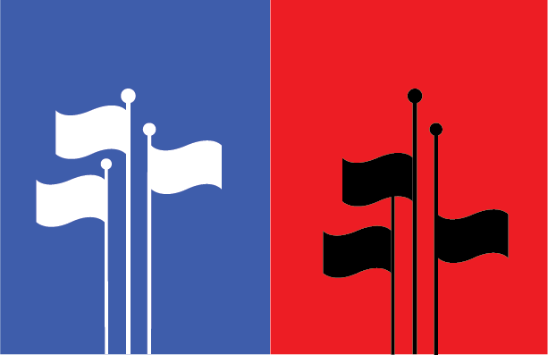

Transition 2017
Software Used: Adobe Illustrator
A personal commentary on the recent political climate. Produced as a sequential element of my final captstone project in Form and Color, taught by Melissa Chandon (DES 15). The full collection is currently hosted on Behance. Satirical political cartoons were a major inspiration for this piece, of course in addition to mounting societal chaos that has seemed increasingly unhinged on all sides of the aisle since the explosive recent Presidential election cycle.